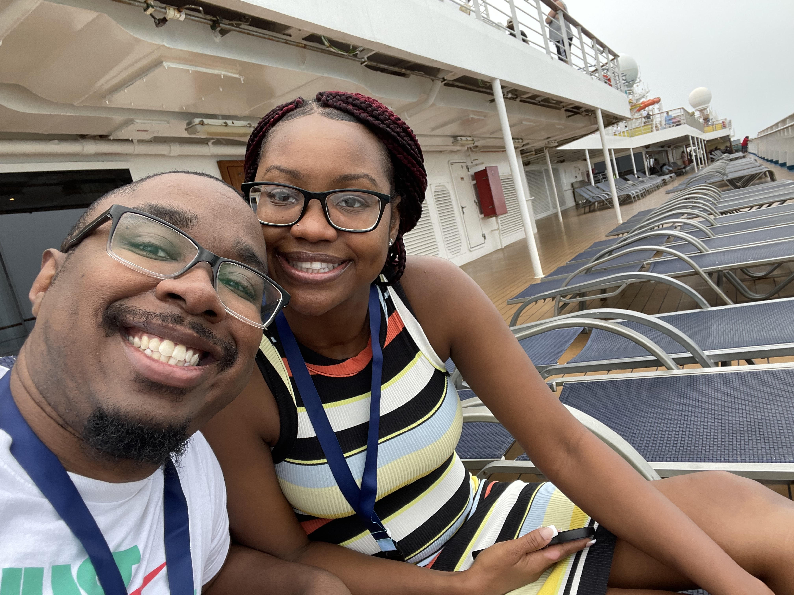
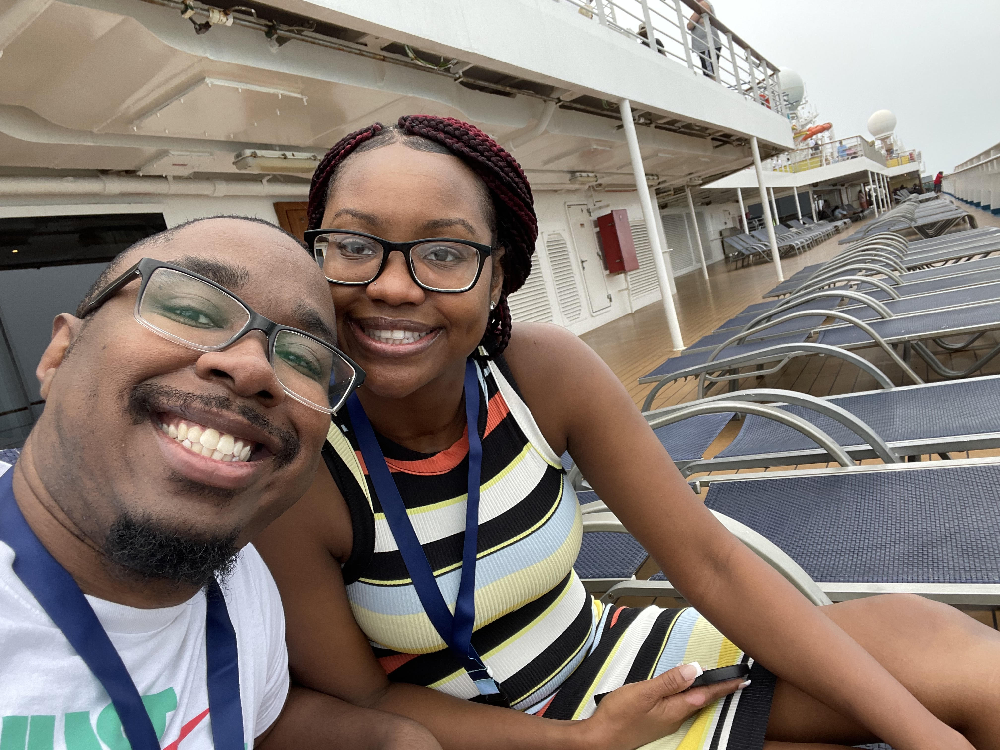

About
A bit about Jasmine
Jasmine is a wonderful woman who I still cannot believe is my fiancé and future wife. She is motivated, driven, and pushes me to be a better person each day. She is a woman who loves her family and is willing to do anything she can for them even at the cost of herself. Though they do show her just as much love in return. She will spend as much time with them as she can, with all the love she has in her. The only other thing she loves as much as her family, are cats. Whether they be kittens or fully grown. She will go out of her way to give them affection. To the point that I have never seen a wild cat show another person so much love. Her gaming hobby is light, but it is something she enjoys. From N64 to Switch, PS5 and beyond, she will try different genres just to get into the game and have some fun. If you were to ask me, I would say her favorite franchises are Mario Kart and Mortal Kombat. Not to mention she loves watching playthroughs on YouTube if she feels she would rather watch a cinematic game along the same lines as a movie. I have personally caught her more than a few times watching Hollow, one of her favorite youtubers. Speaking of movies as well. I am not sure her collection of movies can be beaten. Her collection of blu-rays and DVD’s is honestly very impressive. To the point of filling up entire dressers with them. Her goal is to end up in the medical field. While her choice in profession is still up for debate, she is still interested in choosing a career for herself. Not only that, but she also pushes me towards my own as well. She may not be completely confident in all that she can do, but she has much more drive and determination than even she can see.
Photos
 
